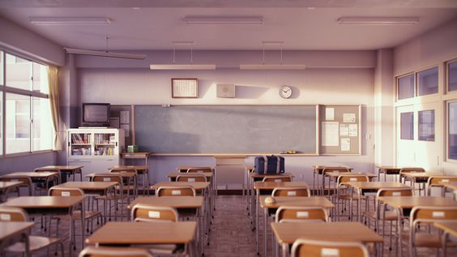
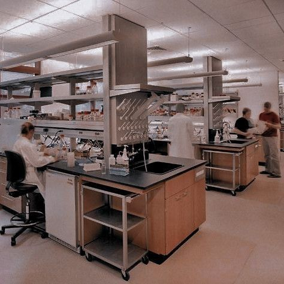
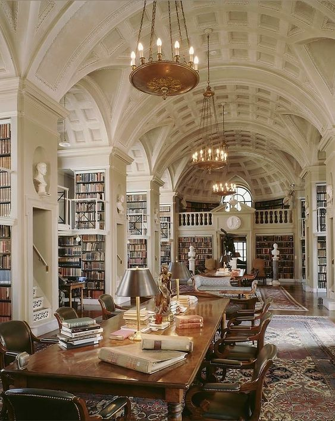
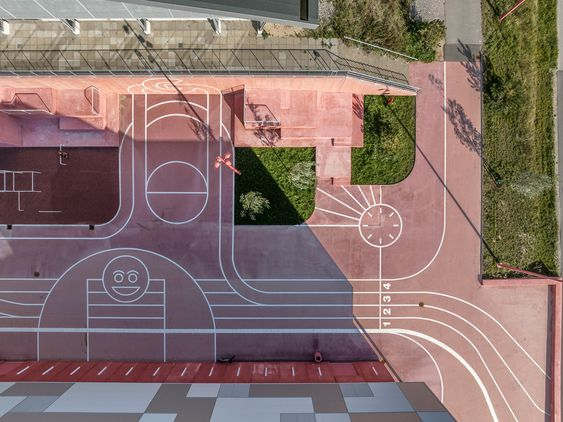
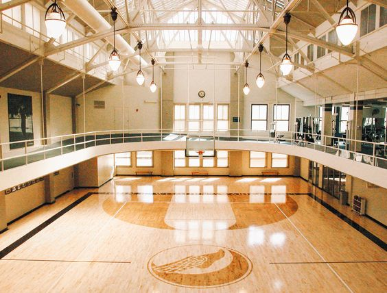
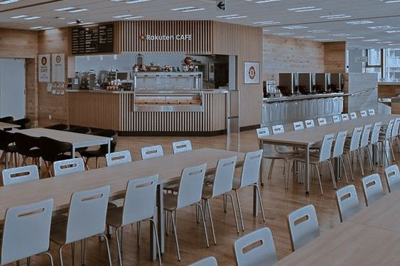
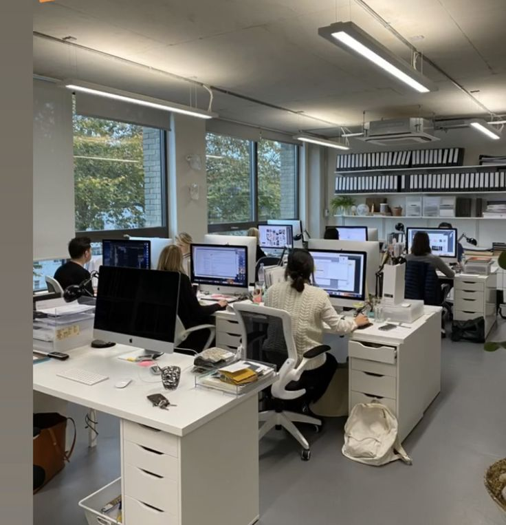
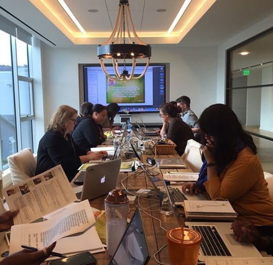
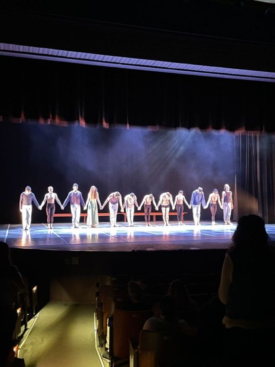

| Instalación |
Descripción |
Imagen |
| Aulas bien equipadas |
Las aulas bien equipadas son espacios diseñados para facilitar el aprendizaje, con mobiliario ergonómico, iluminación adecuada y recursos tecnológicos modernos. Estas aulas están equipadas con pizarras interactivas, proyectores, acceso a internet y suficiente espacio para el movimiento y la interacción entre estudiantes y profesores. El objetivo es crear un entorno de enseñanza óptimo que fomente la participación, la colaboración y el aprendizaje activo.
|
 |
| Laboratorios de ciencias |
"El laboratorio de ciencias es un espacio dedicado a la experimentación y el descubrimiento en el ámbito de las ciencias. Equipado con herramientas, instrumentos y materiales especializados, este laboratorio ofrece a los estudiantes la oportunidad de realizar experimentos prácticos que complementan la teoría aprendida en el aula. Desde la observación de fenómenos naturales hasta la realización de investigaciones científicas, el laboratorio de ciencias brinda un ambiente estimulante donde los estudiantes pueden explorar, investigar y desarrollar habilidades críticas como el pensamiento analítico, la resolución de problemas y el trabajo en equipo."
|
 |
| Biblioteca |
La biblioteca es un espacio dedicado al conocimiento, la investigación y el aprendizaje. Con una amplia colección de libros, revistas, periódicos y recursos multimedia, la biblioteca ofrece a los estudiantes y al personal académico acceso a una gran variedad de información y conocimientos. Además de ser un lugar para el estudio individual y la investigación, la biblioteca también sirve como un centro de encuentro y colaboración, donde se organizan actividades culturales, charlas y eventos educativos. Con áreas de lectura cómodas, salas de estudio privadas y recursos digitales disponibles, la biblioteca es un recurso invaluable para enriquecer el proceso educativo y fomentar el amor por la lectura y el aprendizaje continuo.."
|
 |
Areas recreativas |
Son espacios diseñados para el esparcimiento y el descanso de los estudiantes. Pueden incluir zonas verdes, bancos, áreas de descanso al aire libre, juegos recreativos y áreas de estar donde los estudiantes pueden socializar y relajarse durante los descansos entre clases.
|
 |
| Areas deportivas |
Son áreas dedicadas a la práctica de actividades físicas y deportivas. Pueden incluir canchas de fútbol, baloncesto, voleibol, pistas de atletismo, gimnasios y equipamiento para diferentes disciplinas deportivas. Estas instalaciones fomentan el ejercicio físico, el trabajo en equipo y promueven un estilo de vida saludable entre los estudiantes.
|
 |
| Comedor |
Es un espacio destinado a la alimentación de los estudiantes y el personal escolar. Puede ofrecer servicios de desayuno, almuerzo y merienda, con opciones de comida balanceada y nutritiva. El comedor proporciona un ambiente adecuado para que los estudiantes disfruten de sus comidas, socialicen con sus compañeros y recarguen energías para continuar con sus actividades académicas.
|
 |
Areas administrativas |
Son espacios destinados a la gestión y administración de la escuela. Incluyen oficinas para el personal administrativo y directivo, salas de reuniones, áreas de archivo y recepción. Aquí se llevan a cabo actividades relacionadas con la planificación académica, la gestión de recursos, la atención a padres y la coordinación de eventos escolares.
|
 |
| Sala de profesores |
Son espacios reservados para el trabajo y la preparación de los profesores. Pueden incluir escritorios, computadoras, recursos educativos, impresoras y áreas de descanso. Las salas de profesores proporcionan un lugar tranquilo donde los docentes pueden planificar clases, corregir trabajos, colaborar entre sí y compartir recursos pedagógicos.
|
 |
| Baños |
Son áreas destinadas a la higiene personal de los estudiantes y el personal escolar. Deben estar equipados con lavabos, inodoros, duchas (si es necesario), espejos y dispensadores de jabón y papel higiénico. Los baños deben mantenerse limpios y en buen estado de funcionamiento para garantizar un ambiente saludable y cómodo para todos los usuarios
|
 |
Teatro |
Un teatro es un lugar diseñado específicamente para la realización de obras de teatro, conciertos, conferencias u otras formas de entretenimiento en vivo. Por lo general, cuenta con un escenario elevado, asientos para el público dispuestos en filas escalonadas que ofrecen una buena visibilidad, y sistemas de iluminación y sonido para mejorar la experiencia del espectador. Los teatros pueden variar en tamaño desde pequeñas salas íntimas hasta grandes auditorios. Además del escenario principal, algunos teatros pueden tener áreas adicionales como salas de ensayo, vestidores para los artistas y áreas de concesión para la venta de alimentos y bebidas antes de las actuaciones y durante los intermedios. Los teatros son lugares importantes para la cultura y el arte, donde las personas pueden disfrutar de una amplia gama de expresiones artísticas en vivo.
|
 |